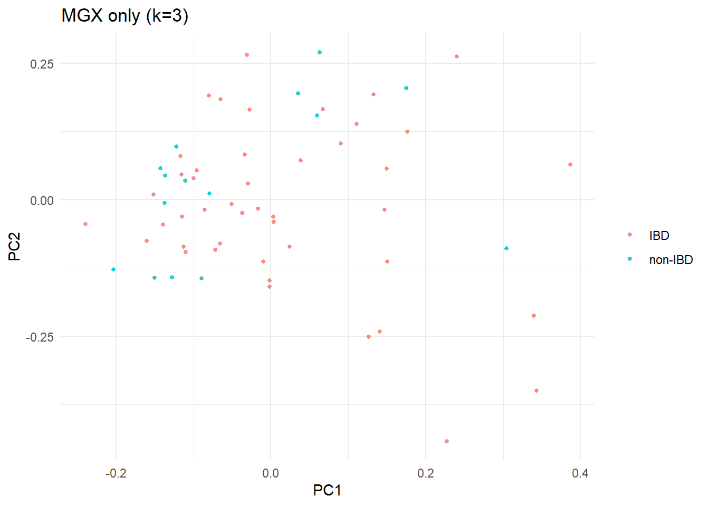
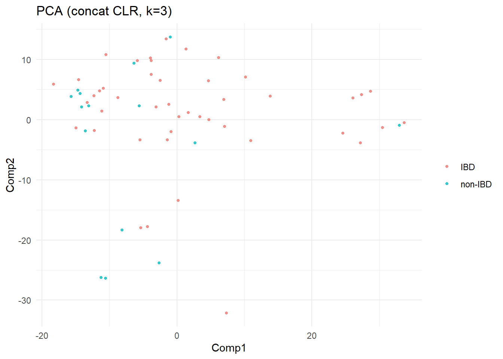

options(warn = -1)
# Install merged branch containing Joint-RPCA
remotes::install_github("microbiome/mia", ref = "rpca", upgrade = "never")
#necessary imports
library(Matrix)
library(tidyr)
library(ggplot2)
library(vegan)
library(MultiAssayExperiment)
library(pROC)
library(dplyr, warn.conflicts = FALSE)
library(mia)
library(ranger)
library(matrixStats)
# Helpers
`%||%` <- function(a, b) if (is.null(a)) b else a
#convenience: run Joint-RPCA and return scores + metrics
.fit_and_score <- function(mae, k, grp_df) {
set.seed(42)
args <- list(
x = mae,
transform = "rclr",
n.components = k,
max.iterations = 50,
min.sample.count = 0,
min.feature.count = 0,
min.feature.frequency = 0
)
args <- args[names(args) %in% names(formals(mia:::jointRPCAuniversal))]
fit <- do.call(mia:::jointRPCAuniversal, args)
U <- as.data.frame(fit$ord_res$samples)
colnames(U) <- paste0("V", seq_len(ncol(U)))
U$sample_id <- rownames(U)
U2 <- dplyr::left_join(U, grp_df, by = "sample_id")
list(scores = U2, metrics = .eval_scores(U2), fit = fit)
}
.find_subject_col <- function(meta) {
nm <- tolower(trimws(names(meta)))
# common plausible names in IBDMDB metadata
hits <- c("participant.id", "participant_id", "participantid",
"subject", "subject_id", "host_subject_id", "host.subject.id",
"participant", "host_subject")
ix <- intersect(nm, hits)
if (length(ix)) ix[1] else NULL
}
#collect metrics
.grab <- function(x) {
m <- x$metrics
c(
wilcox_PC1_p = m$wilcox_PC1_p %||% NA_real_,
wilcox_PC2_p = m$wilcox_PC2_p %||% NA_real_,
permanova_R2 = m$permanova_R2 %||% NA_real_,
permanova_p = m$permanova_p %||% NA_real_,
AUROC = m$AUROC %||% NA_real_
)
}
.eval_scores <- function(scores_df) {
out <- list()
if (!("Group" %in% names(scores_df))) return(out)
#detect available component columns
comp_cols <- grep("^V\\d+$", names(scores_df), value = TRUE)
if (!length(comp_cols)) return(out)
use_cols <- comp_cols[seq_len(min(3L, length(comp_cols)))]
#Wilcoxon tests
if ("V1" %in% names(scores_df)) {
res_w1 <- try(wilcox.test(scores_df$V1 ~ scores_df$Group, exact = FALSE), silent = TRUE)
out$wilcox_PC1_p <- if (!inherits(res_w1, "try-error")) res_w1$p.value else NA_real_
}
if ("V2" %in% names(scores_df)) {
res_w2 <- try(wilcox.test(scores_df$V2 ~ scores_df$Group, exact = FALSE), silent = TRUE)
out$wilcox_PC2_p <- if (!inherits(res_w2, "try-error")) res_w2$p.value else NA_real_
}
#PERMANOVA (only if >=2 components exist)
if (length(use_cols) >= 2) {
perm_df <- na.omit(scores_df[, c("Group", use_cols), drop = FALSE])
if (nrow(perm_df) > 5 &&
is.factor(perm_df$Group) &&
nlevels(perm_df$Group) >= 2 &&
all(table(perm_df$Group) >= 3)) {
#safely build numeric matrix for the available component columns
comp_mat <- as.matrix(perm_df[, use_cols, drop = FALSE])
colnames(comp_mat) <- use_cols
perm <- try(
vegan::adonis2(comp_mat ~ Group, data = perm_df, method = "euclidean"),
silent = TRUE
)
if (!inherits(perm, "try-error")) {
out$permanova_R2 <- perm$R2[1]
out$permanova_F <- perm$F[1]
out$permanova_p <- perm$`Pr(>F)`[1]
} else {
out$permanova_R2 <- NA_real_
out$permanova_F <- NA_real_
out$permanova_p <- NA_real_
}
}
}
#AUROC with ranger if at least 1 component exists
rf_df <- na.omit(scores_df[, c("Group", use_cols), drop = FALSE])
if (nrow(rf_df) && is.factor(rf_df$Group) && nlevels(rf_df$Group) >= 2) {
cls_tab <- table(rf_df$Group)
wts <- as.numeric(1 / cls_tab)
names(wts) <- names(cls_tab)
set.seed(42)
rf_prob <- ranger::ranger(
Group ~ ., data = rf_df, num.trees = 500,
probability = TRUE, class.weights = wts, oob.error = TRUE
)
if ("IBD" %in% colnames(rf_prob$predictions)) {
p_ibd <- rf_prob$predictions[, "IBD"]
roc_obj <- pROC::roc(rf_df$Group, p_ibd, levels = c("non-IBD", "IBD"))
out$AUROC <- as.numeric(pROC::auc(roc_obj))
}
}
out
}
.plt_ord <- function(scores, title) {
ggplot2::ggplot(scores, ggplot2::aes(V1, V2, color = Group)) +
ggplot2::geom_point(alpha = 0.8, size = 1.1) +
ggplot2::labs(title = title, x = "PC1", y = "PC2", color = NULL) +
ggplot2::theme_minimal()
}
.build_sample_subject_map <- function(meta_df, sample_ids, min_frac = 0.01, min_abs = 10L) {
if (is.null(meta_df) || !nrow(meta_df)) return(NULL)
md <- as.data.frame(meta_df, stringsAsFactors = FALSE)
names(md) <- tolower(trimws(names(md)))
#choose "best" sample-id column by overlap with our samples
sid <- tolower(trimws(as.character(sample_ids)))
thresh <- max(min_abs, floor(length(sid) * min_frac))
overlaps <- sapply(md, function(col) {
x <- tolower(trimws(as.character(col))); sum(!is.na(x) & x %in% sid)
})
max_ov <- suppressWarnings(max(overlaps, na.rm = TRUE))
if (!is.finite(max_ov) || max_ov < thresh) return(NULL)
best_id_col <- names(overlaps)[which.max(overlaps)]
subj_col <- .find_subject_col(md)
if (is.null(subj_col)) return(NULL)
md$sample_id <- tolower(trimws(as.character(md[[best_id_col]])))
md$subject_id <- as.character(md[[subj_col]])
out <- unique(md[, c("sample_id", "subject_id")])
out <- out[!is.na(out$sample_id) & nzchar(out$sample_id) & !is.na(out$subject_id) & nzchar(out$subject_id), , drop = FALSE]
if (!nrow(out)) return(NULL)
out
}
.make_mae_for <- function(cols) {
cd2 <- S4Vectors::DataFrame(row.names = samps[cols])
se_mgx2 <- SummarizedExperiment::SummarizedExperiment(list(counts = X_mgx[, cols, drop = FALSE]), colData = cd2)
se_mtx2 <- SummarizedExperiment::SummarizedExperiment(list(counts = X_mtx[, cols, drop = FALSE]), colData = cd2)
mae2 <- MultiAssayExperiment::MultiAssayExperiment(list(MGX = se_mgx2, MTX = se_mtx2))
MultiAssayExperiment::intersectColumns(mae2)
}
.clr_transform <- function(mat, pseudo = 1e-6) {
# columns are samples; compositional CLR per sample
x <- log(mat + pseudo)
x <- sweep(x, 2, colMeans(x), FUN = "-")
x[!is.finite(x)] <- 0
x
}
.zscore_rows <- function(mat) {
# center/scale each feature (row) across samples
m <- rowMeans(mat); s <- matrixStats::rowSds(mat)
s[s == 0 | !is.finite(s)] <- 1
sweep(sweep(mat, 1, m, "-"), 1, s, "/")
}
.make_scores_df <- function(S, sample_ids) {
S <- as.matrix(S)
colnames(S) <- paste0("V", seq_len(ncol(S)))
out <- as.data.frame(S)
out$sample_id <- sample_ids
dplyr::left_join(out, grp_df, by = "sample_id")
}
.eval_wrapper <- function(scores_df, label) {
list(model = label, metrics = .eval_scores(scores_df), scores = scores_df)
}
.hellinger <- function(mat) {
# columns are samples
cs <- colSums(mat)
cs[cs <= 0 | !is.finite(cs)] <- 1
p <- sweep(mat, 2, cs, "/")
x <- sqrt(p)
x[!is.finite(x)] <- 0
x
}
#load compact demo data
data(ibdmdb_2omic_demo)
mae_joint <- ibdmdb_2omic_demo
se_mgx <- mae_joint[["MGX"]]
se_mtx <- mae_joint[["MTX"]]
X_mgx <- SummarizedExperiment::assay(se_mgx, 1L)
X_mtx <- SummarizedExperiment::assay(se_mtx, 1L)
stopifnot(identical(colnames(X_mgx), colnames(X_mtx)))
sample_ids <- colnames(X_mgx)
SummarizedExperiment::assay(se_mgx, "counts") <- X_mgx
SummarizedExperiment::assay(se_mtx, "counts") <- X_mtx
mae_joint[["MGX"]] <- se_mgx
mae_joint[["MTX"]] <- se_mtx
mae_mgx <- MultiAssayExperiment::MultiAssayExperiment(list(MGX = se_mgx))
mae_mtx <- MultiAssayExperiment::MultiAssayExperiment(list(MTX = se_mtx))
# metadata from colData (no ibdmdb_meta_demo)
meta_df <- as.data.frame(SummarizedExperiment::colData(mae_joint), stringsAsFactors = FALSE)
meta_df$sample_id <- rownames(meta_df)
meta_df$diagnosis <- as.character(meta_df$diagnosis)
# ------------------------------------------------------------------------------
#build groups (IBD vs non-IBD) from metadata
# ------------------------------------------------------------------------------
grp_df <- data.frame(
sample_id = meta_df$sample_id,
diagnosis = meta_df$diagnosis,
stringsAsFactors = FALSE
)
grp_df$Group <- dplyr::case_when(
grp_df$diagnosis %in% c("UC", "CD") ~ "IBD",
grepl("^non", grp_df$diagnosis, ignore.case = TRUE) ~ "non-IBD",
TRUE ~ NA_character_
)
grp_df$Group <- factor(grp_df$Group, levels = c("IBD", "non-IBD"))
grp_df <- grp_df[, c("sample_id", "Group")]
print(table(grp_df$Group, useNA = "ifany"))
IBD non-IBD
45 15 # ------------------------------------------------------------------------------
#joint vs single-omic comparison
# ------------------------------------------------------------------------------
#choose a safe k
per_view_min_dim <- sapply(list(X_mgx, X_mtx), function(m) min(nrow(m), ncol(m)))
k_max <- max(1L, min(per_view_min_dim))
k0 <- min(3L, k_max)
#run fits
res_joint <- .fit_and_score(mae_joint, k0, grp_df)
res_mgx <- .fit_and_score(mae_mgx, k0, grp_df)
res_mtx <- .fit_and_score(mae_mtx, k0, grp_df)
bench_tbl <- rbind(
cbind(model = "Joint (MGX+MTX)", t(.grab(res_joint))),
cbind(model = "MGX only", t(.grab(res_mgx))),
cbind(model = "MTX only", t(.grab(res_mtx)))
) %>% as.data.frame()
bench_tbl[, -1] <- lapply(bench_tbl[, -1, drop = FALSE], function(z) as.numeric(z))
knitr::kable(bench_tbl, digits = 3)| model | wilcox_PC1_p | wilcox_PC2_p | permanova_R2 | permanova_p | AUROC |
|---|---|---|---|---|---|
| Joint (MGX+MTX) | 0.206 | 0.331 | 0.061 | 0.010 | 0.625 |
| MGX only | 0.056 | 0.473 | 0.019 | 0.346 | 0.650 |
| MTX only | 0.746 | 0.003 | 0.066 | 0.004 | 0.644 |
# ------------------------------------------------------------------------------
#plots: Ordinations (PC1 vs PC2)
# ------------------------------------------------------------------------------
print(.plt_ord(res_joint$scores, sprintf("Joint-RPCA (k=%d)", k0)))
print(.plt_ord(res_mgx$scores, sprintf("MGX only (k=%d)", k0)))
print(.plt_ord(res_mtx$scores, sprintf("MTX only (k=%d)", k0)))
# ------------------------------------------------------------------------------
#sensitivity to rank k
# ------------------------------------------------------------------------------
ks <- sort(unique(pmax(1, pmin(c(2, 3, 4, 5), k_max))))
sens <- lapply(ks, function(k) {
rj <- .fit_and_score(mae_joint, k, grp_df)$metrics
rm <- .fit_and_score(mae_mgx, k, grp_df)$metrics
rt <- .fit_and_score(mae_mtx, k, grp_df)$metrics
num_or_na <- function(x) if (is.null(x)) NA_real_ else as.numeric(x)
data.frame(
k = rep(k, 3),
model = c("Joint", "MGX", "MTX"),
AUROC = c(
num_or_na(rj$AUROC),
num_or_na(rm$AUROC),
num_or_na(rt$AUROC)
),
permanova_R2 = c(
num_or_na(rj$permanova_R2),
num_or_na(rm$permanova_R2),
num_or_na(rt$permanova_R2)
),
wilcox_PC1_p = c(
num_or_na(rj$wilcox_PC1_p),
num_or_na(rm$wilcox_PC1_p),
num_or_na(rt$wilcox_PC1_p)
),
stringsAsFactors = FALSE
)
})
sens_df <- do.call(rbind, sens)
knitr::kable(sens_df, digits = 3)| k | model | AUROC | permanova_R2 | wilcox_PC1_p |
|---|---|---|---|---|
| 2 | Joint | 0.625 | 0.061 | 0.206 |
| 2 | MGX | 0.650 | 0.019 | 0.056 |
| 2 | MTX | 0.644 | 0.066 | 0.746 |
| 3 | Joint | 0.625 | 0.061 | 0.206 |
| 3 | MGX | 0.650 | 0.019 | 0.056 |
| 3 | MTX | 0.644 | 0.066 | 0.746 |
| 4 | Joint | 0.625 | 0.061 | 0.206 |
| 4 | MGX | 0.650 | 0.019 | 0.056 |
| 4 | MTX | 0.644 | 0.066 | 0.746 |
| 5 | Joint | 0.625 | 0.061 | 0.206 |
| 5 | MGX | 0.650 | 0.019 | 0.056 |
| 5 | MTX | 0.644 | 0.066 | 0.746 |
ggplot2::ggplot(sens_df, ggplot2::aes(k, AUROC, group = model, color = model)) +
ggplot2::geom_line() + ggplot2::geom_point() +
ggplot2::scale_x_continuous(breaks = ks) +
ggplot2::labs(title = "AUROC vs rank k", x = "k", y = "AUROC") +
ggplot2::theme_minimal()
ggplot2::ggplot(sens_df, ggplot2::aes(k, permanova_R2, group = model, color = model)) +
ggplot2::geom_line() + ggplot2::geom_point() +
ggplot2::scale_x_continuous(breaks = ks) +
ggplot2::labs(title = "PERMANOVA R² vs rank k", x = "k", y = "R²") +
ggplot2::theme_minimal()
# ------------------------------------------------------------------------------
#standard PCA / NMF
# ------------------------------------------------------------------------------
#shared CLR inputs (MGX / MTX as features x samples)
MGX_clr <- .clr_transform(X_mgx)
MTX_clr <- .clr_transform(X_mtx)
sample_ids <- colnames(MGX_clr)
#PCA on concatenated MGX+MTX (after CLR)
X_concat <- rbind(.zscore_rows(MGX_clr), .zscore_rows(MTX_clr))
X_concat_t <- t(X_concat)
pc_fit <- try(prcomp(X_concat_t, center = TRUE, scale. = FALSE), silent = TRUE)
cmp_pca <- NULL
if (!inherits(pc_fit, "try-error")) {
pcs <- pc_fit$x[, seq_len(min(k0, ncol(pc_fit$x))), drop = FALSE]
pca_scores <- .make_scores_df(pcs, rownames(pc_fit$x))
cmp_pca <- .eval_wrapper(pca_scores, sprintf("PCA (concat CLR, k=%d)", min(k0, ncol(pcs))))
} else {
message("[PCA] skipped: ", as.character(pc_fit))
}
#NMF (Hellinger)
cmp_nmf <- NULL
MGX_h <- .hellinger(X_mgx)
MTX_h <- .hellinger(X_mtx)
V_h <- rbind(MGX_h, MTX_h)
stopifnot(ncol(V_h) == length(sample_ids))
set.seed(42)
nmf_k <- k0
if (requireNamespace("NMF", quietly = TRUE)) {
nmf_fit <- try(
NMF::nmf(V_h, rank = nmf_k, method = "brunet", nrun = 5, .options = "t"),
silent = TRUE
)
if (!inherits(nmf_fit, "try-error")) {
H <- NMF::coef(nmf_fit)
S <- t(H)[, seq_len(min(nmf_k, nrow(t(H)))), drop = FALSE]
nmf_scores <- .make_scores_df(S, sample_ids)
cmp_nmf <- .eval_wrapper(nmf_scores, sprintf("NMF (Hellinger, k=%d)", ncol(S)))
} else {
message("[NMF] NMF::nmf failed: ", as.character(nmf_fit))
}
} else if (requireNamespace("NNLM", quietly = TRUE)) {
nn <- try(
NNLM::nnmf(V_h, k = nmf_k, loss = "mse", max.iter = 1000, rel.tol = 1e-4),
silent = TRUE
)
if (!inherits(nn, "try-error")) {
H <- nn$H
S <- t(H)[, seq_len(min(nmf_k, nrow(t(H)))), drop = FALSE]
nmf_scores <- .make_scores_df(S, sample_ids)
cmp_nmf <- .eval_wrapper(nmf_scores, sprintf("NMF (Hellinger, k=%d, NNLM)", ncol(S)))
} else {
message("[NMF] NNLM::nnmf failed: ", as.character(nn))
}
} else {
message("[NMF] skipped: install NMF or NNLM.")
}
# ------------------------------------------------------------------------------
#collect & display comparator metrics
# ------------------------------------------------------------------------------
comparators <- Filter(Negate(is.null),
list(cmp_pca = cmp_pca,
cmp_nmf = cmp_nmf)
)
if (length(comparators)) {
comp_tbl <- do.call(rbind, lapply(comparators, function(x) {
m <- x$metrics
num_or_na <- function(z) if (is.null(z)) NA_real_ else as.numeric(z)
data.frame(
model = x$model,
wilcox_PC1_p = num_or_na(m$wilcox_PC1_p),
wilcox_PC2_p = num_or_na(m$wilcox_PC2_p),
permanova_R2 = num_or_na(m$permanova_R2),
permanova_p = num_or_na(m$permanova_p),
AUROC = num_or_na(m$AUROC),
stringsAsFactors = FALSE
)
}))
knitr::kable(comp_tbl, digits = 3, caption = "Comparators: PCA / NMF")
.plot_comp <- function(obj) {
if (is.null(obj)) return(invisible(NULL))
ggplot2::ggplot(obj$scores, ggplot2::aes(V1, V2, color = Group)) +
ggplot2::geom_point(alpha = 0.8, size = 1.0) +
ggplot2::labs(title = obj$model, x = "Comp1", y = "Comp2", color = NULL) +
ggplot2::theme_minimal()
}
invisible(lapply(comparators, function(x) print(.plot_comp(x))))
} else {
message("No comparator results available (all skipped).")
}
# ------------------------------------------------------------------------------
#comparison bars: Joint-RPCA vs PCA vs NMF
# ------------------------------------------------------------------------------
joint_row <- bench_tbl %>%
dplyr::filter(grepl("^Joint", model)) %>%
dplyr::mutate(model_simple = "Joint-RPCA")
comp_rows <- if (exists("comp_tbl")) {
comp_tbl %>%
dplyr::mutate(
model_simple = dplyr::case_when(
grepl("^PCA", model) ~ "PCA",
grepl("^NMF", model) ~ "NMF",
TRUE ~ model
)
)
} else {
data.frame()
}
cmp_all <- dplyr::bind_rows(
joint_row %>% dplyr::select(model_simple, permanova_R2, AUROC),
comp_rows %>% dplyr::select(model_simple, permanova_R2, AUROC)
) %>%
dplyr::distinct() %>%
dplyr::filter(model_simple %in% c("Joint-RPCA", "PCA", "NMF")) %>%
dplyr::mutate(
model_simple = factor(model_simple, levels = c("Joint-RPCA", "PCA", "NMF"))
)
cmp_long <- tidyr::pivot_longer(
cmp_all,
cols = c(permanova_R2, AUROC),
names_to = "metric",
values_to = "value"
) %>%
dplyr::filter(!is.na(value))
ggplot2::ggplot(cmp_long, ggplot2::aes(x = model_simple, y = value, fill = metric)) +
ggplot2::geom_col(position = ggplot2::position_dodge(width = 0.7), width = 0.6) +
ggplot2::geom_text(
ggplot2::aes(label = sprintf("%.3f", value)),
position = ggplot2::position_dodge(width = 0.7),
vjust = -0.35, size = 3
) +
ggplot2::geom_hline(
data = subset(cmp_long, metric == "AUROC"),
ggplot2::aes(yintercept = 0.5),
linetype = 2, linewidth = 0.3, inherit.aes = FALSE
) +
ggplot2::coord_cartesian(
ylim = c(0, max(1, max(cmp_long$value, na.rm = TRUE) * 1.1))
) +
ggplot2::labs(
title = "Joint-RPCA vs PCA vs NMF",
subtitle = "Side-by-side comparison of PERMANOVA R² and AUROC",
x = NULL, y = "Score", fill = NULL
) +
ggplot2::theme_minimal(base_size = 11) +
ggplot2::theme(legend.position = "top")
#label: session-info
sessionInfo()R version 4.5.2 (2025-10-31 ucrt)
Platform: x86_64-w64-mingw32/x64
Running under: Windows 11 x64 (build 22631)
Matrix products: default
LAPACK version 3.12.1
locale:
[1] LC_COLLATE=English_United States.utf8
[2] LC_CTYPE=English_United States.utf8
[3] LC_MONETARY=English_United States.utf8
[4] LC_NUMERIC=C
[5] LC_TIME=English_United States.utf8
time zone: Asia/Qyzylorda
tzcode source: internal
attached base packages:
[1] parallel stats4 stats graphics grDevices utils datasets
[8] methods base
other attached packages:
[1] doParallel_1.0.17 iterators_1.0.14
[3] foreach_1.5.2 ranger_0.17.0
[5] mia_1.19.2 TreeSummarizedExperiment_2.18.0
[7] Biostrings_2.78.0 XVector_0.50.0
[9] SingleCellExperiment_1.32.0 dplyr_1.1.4
[11] pROC_1.19.0.1 MultiAssayExperiment_1.36.1
[13] SummarizedExperiment_1.40.0 Biobase_2.70.0
[15] GenomicRanges_1.62.0 Seqinfo_1.0.0
[17] IRanges_2.44.0 S4Vectors_0.48.0
[19] BiocGenerics_0.56.0 generics_0.1.4
[21] MatrixGenerics_1.22.0 matrixStats_1.5.0
[23] vegan_2.7-2 permute_0.9-8
[25] ggplot2_4.0.1 tidyr_1.3.1
[27] Matrix_1.7-4
loaded via a namespace (and not attached):
[1] DBI_1.2.3 gridExtra_2.3
[3] remotes_2.5.0 rlang_1.1.6
[5] magrittr_2.0.4 gridBase_0.4-7
[7] scater_1.38.0 compiler_4.5.2
[9] mgcv_1.9-3 DelayedMatrixStats_1.32.0
[11] vctrs_0.6.5 reshape2_1.4.5
[13] stringr_1.6.0 pkgconfig_2.0.3
[15] crayon_1.5.3 fastmap_1.2.0
[17] labeling_0.4.3 scuttle_1.20.0
[19] rmarkdown_2.30 ggbeeswarm_0.7.3
[21] DirichletMultinomial_1.52.0 purrr_1.2.0
[23] xfun_0.54 bluster_1.20.0
[25] beachmat_2.26.0 jsonlite_2.0.0
[27] DelayedArray_0.36.0 BiocParallel_1.44.0
[29] irlba_2.3.5.1 cluster_2.1.8.1
[31] R6_2.6.1 stringi_1.8.7
[33] RColorBrewer_1.1-3 Rcpp_1.1.0
[35] knitr_1.50 DECIPHER_3.6.0
[37] BiocBaseUtils_1.12.0 splines_4.5.2
[39] igraph_2.2.1 tidyselect_1.2.1
[41] rstudioapi_0.17.1 abind_1.4-8
[43] yaml_2.3.11 viridis_0.6.5
[45] codetools_0.2-20 curl_7.0.0
[47] plyr_1.8.9 lattice_0.22-7
[49] tibble_3.3.0 treeio_1.34.0
[51] withr_3.0.2 S7_0.2.1
[53] evaluate_1.0.5 BiocManager_1.30.27
[55] pillar_1.11.1 rngtools_1.5.2
[57] sparseMatrixStats_1.22.0 scales_1.4.0
[59] tidytree_0.4.7 NMF_0.28
[61] glue_1.8.0 lazyeval_0.2.2
[63] tools_4.5.2 BiocNeighbors_2.4.0
[65] ScaledMatrix_1.18.0 registry_0.5-1
[67] fs_1.6.6 grid_4.5.2
[69] ecodive_2.2.1 ape_5.8-1
[71] colorspace_2.1-2 nlme_3.1-168
[73] beeswarm_0.4.0 BiocSingular_1.26.1
[75] vipor_0.4.7 cli_3.6.5
[77] rsvd_1.0.5 rappdirs_0.3.3
[79] S4Arrays_1.10.1 viridisLite_0.4.2
[81] gtable_0.3.6 yulab.utils_0.2.3
[83] digest_0.6.39 SparseArray_1.10.4
[85] ggrepel_0.9.6 decontam_1.30.0
[87] htmlwidgets_1.6.4 farver_2.1.2
[89] htmltools_0.5.9 lifecycle_1.0.5
[91] MASS_7.3-65